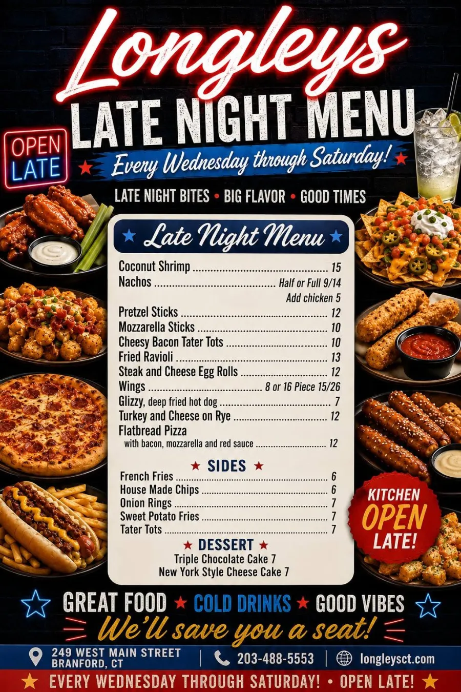

Looking for the best late night food Branford CT has to offer? Longley's is one of the only restaurants on the Connecticut shoreline still serving well past midnight. While most spots in the area shut their kitchens down by 9 or 10 PM, ours keeps cooking until 1 AM midweek and 2 AM on Friday and Saturday - and every Wednesday through Saturday we run a dedicated Late Night Menu built for exactly that hour.
The Late Night Menu
Served every Wednesday through Saturday. Late night bites, big flavor, good times - shareable plates, hot out of the fryer, priced for the end of the night.

- Coconut Shrimp$15
- NachosHalf $9 / Full $14Add chicken $5
- Pretzel Sticks$12
- Mozzarella Sticks$10
- Cheesy Bacon Tater Tots$10
- Fried Ravioli$13
- Steak and Cheese Egg Rolls$12
- Wings8 pc $15 / 16 pc $26
- Glizzy$7Deep fried hot dog
- Turkey and Cheese on Rye$12
- Flatbread Pizza$12With bacon, mozzarella and red sauce
Sides
- French Fries$6
- House Made Chips$6
- Onion Rings$7
- Sweet Potato Fries$7
- Tater Tots$7
Dessert
- Triple Chocolate Cake$7
- New York Style Cheese Cake$7
Earlier in the evening, the full dinner menu is still on - build-your-own burgers, crispy bone-in wings, homemade chili, and our famous prime rib French onion soup.
Who's Coming in for Late Night Food?
A little bit of everyone. Shift workers getting off late, couples looking for a real meal after a show, and college students who want something better than a drive-thru. We see regulars from all over the shoreline - East Haven, North Haven, Guilford, and beyond.
Full Bar Open Late
The bar keeps pace with the kitchen: draft beers, curated wines, and craft cocktails poured right up until close.
Live Music and Weekend Events
Come for the food, stay for the show. We host live music on the weekends, plus trivia nights and seasonal events all year long.
Dine In or Take Out
Grab a booth, sit at the bar, or call ahead at (203) 488-5553 and take it to go.
Easy to Find, Plenty of Parking
We're at 249 West Main Street in Branford, right near the East Haven line, with plenty of free parking out front.